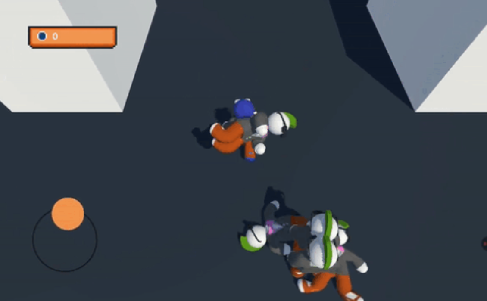

Hiper Casual
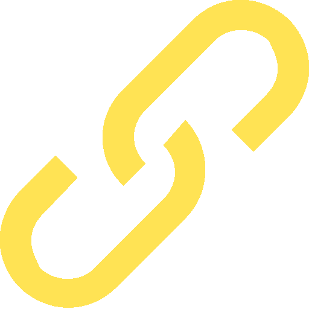
This is test project
This project was carried out as a vacancy test for Unity Mobile Dev in 2025, everything was done in 48 hours, divided into 5 days, Hyper Casual mobile game with stacking, ragdoll and optimized for performance on mobiles.
Knowledge I used:
- Sistem Development
- Mobile Optimization
- Project management
- Game development
- Animation Layers / RagDoll
Tools and Languages:
- Unity
- C#
- Canva
The Result
This was the result of 5 days working on this project, this game was made aiming at optimization for mobile and old devices, its gameplay is simple like that of hyper casual games, analog movement, stacking of items and upgrades.
The Development
For this project, a mind map was created explaining many of the development planning processes aimed at optimization and the final result of the product.
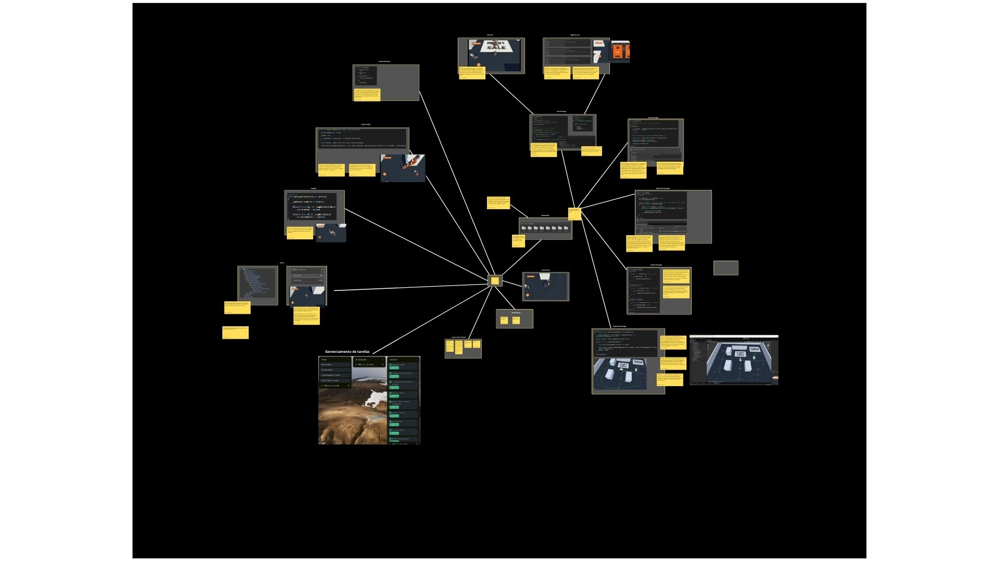
The project planning was basically done with goals per day, each day systems were chosen to be completed in a BASE format, to be a growing progress during the 5 days.
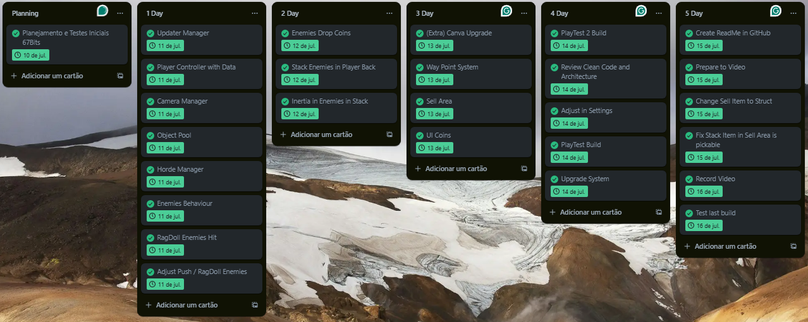
Master Managers centralize certain functions and allow for better architecture of independent and optimized systems.
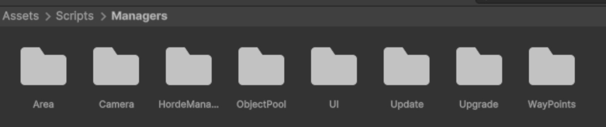
Area Manager
Area Manager will serve to centralize the possible areas of the game (Sell, Upgrade), being able to create new areas using the IArea interface, it also makes it possible to register observers (observers in case something happens in the area, for example an item was sold) for a certain area using the Enum AreaType
This way the system expands to several new areas, and each area has its responsibilities with the objective for which it was created. The sales area only sells items, the upgrade area only upgrades the character.
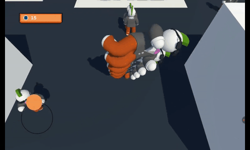
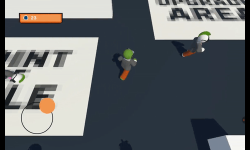
Horde Manager
Horde Manager will serve to control the population that will be generated for the player to slaughter, it uses a Scriptable object that contains easily accessible configuration data to change the time interval between generated characters, the maximum number of characters that can be on screen at the same time and an array of IDs that will be used to know which characters can be generated in this phase.
This makes it easy to balance and gives greater control over the device's performance, since on weaker devices you can have a configuration for the maximum number of characters on screen at the same time.
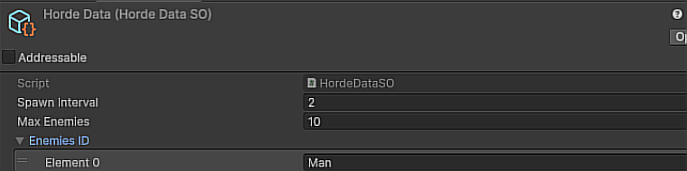
Object Pool Manager
Object Pool Manager will serve as a distributor of objects already generated in the scene, and will reuse them to avoid creating new objects whenever necessary. It creates families (Set of objects) with at least 5 objects. If it is necessary to have more of that object, it will generate new ones. However, if there are still objects from that family that are not being used, it will use them until the initial quantity of 5 is exhausted.
This will serve to avoid performance consumption in object generation during the game, reuse is better performance, it was inserted as addressables in case in the future it was necessary to pull objects that do not yet have their families created, for example a new type of character that appears after level 2, or a specific unlocked outfit.
Update Manager
Update Manager centralizes all update calls, this avoids multiple Update calls made by Unity C++ itself, which increases performance if the project requires using Update, in addition to having more control between Update calls and being able to have more visual how dependent your project is on Update.
For scripts that need to use Update, one of the following interfaces can be used (IUpdater, ILateUpdater, IFixedUpdater). With this interface, it can register in one of the Update Manager lists that will start to be called to update.
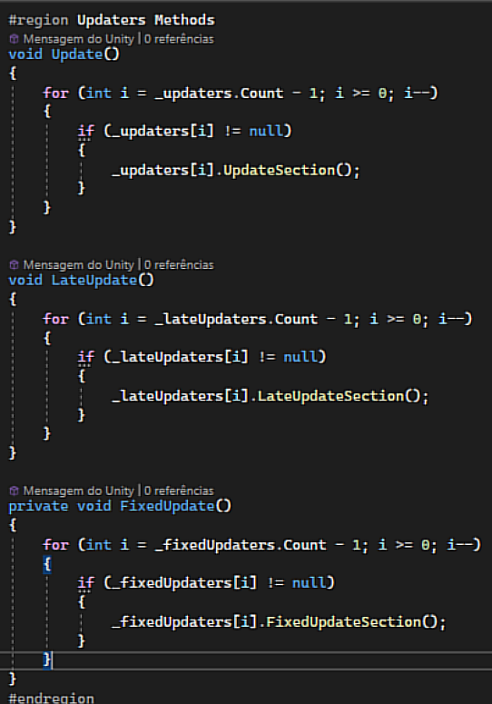
WayPoints Manager
With the use of many RigidBodies for the requested ragdoll effect, I thought of ways to avoid more processing consumption, especially with physics, for this the NPCs move ONLY using transform.position which is something much less heavy than if I used the RigidBody itself for movement.
But to avoid characters walking through walls and still give an air of intelligent NPCs, the WayPointManager was created, which deals with several WayPoints positioned around the map, it generates random paths for each NPC to move.
WayPoints are displayed during editing to show the possible paths considered by the Manager, thus generating random paths, in addition to considering the closest point to where the NPC is generated.

Player Stack
The player was divided into MC (Model and Controller) where the controller manages all the player's inputs on the virtual joystick, and the Model is the movement logic, stats, triggers...
It also has a specific script for stacking items, where it has the logic for movement using inertia and rotation with locks if necessary.
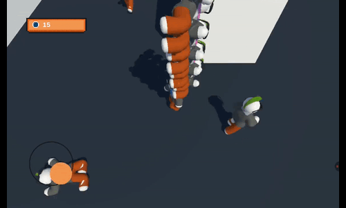
Ragdoll + Animation Layer
For characters that needed to use ragdoll, a script was made just to activate the ragdoll, it activates collisions and Kinematic, and deactivates animation.
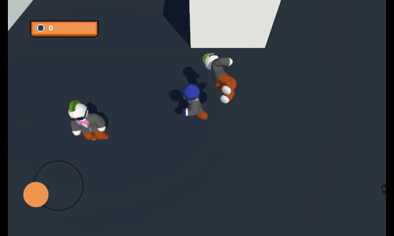
Parameters were used in the animation to switch between walking and running animations depending on how stretched the virtual joystick was.
Layers were used to create a separate animation for the upper body, independent of the rest of the body, allowing for animation that makes it appear as if he's pushing NPCs while the running/walking animation is in the legs.
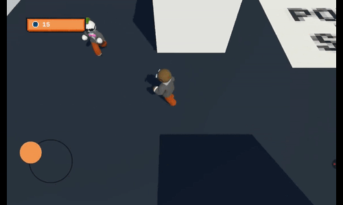
The Conclusions
It was interesting to relearn ragdoll, which is something I don't normally use much in my games, in addition to putting into practice more optimization concepts that I've been learning over time, I liked that it worked on my old tablet that I use as a basis for performance on old devices.